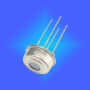

藍牙5.2
它的设计是为了增强定位服务，以前只有基于信号强度的技术已经与接收信号强度指示(RSSI)一起使用。主要場景包括室內導航、室內定位（精準到釐米級）、颱風範圍定位等。主要用於商場、地形複雜的停車場、會展中心等地方，可快速進行室內導航及室內定位。
應用場景
一
增強型ATT協議
EnhancedAttributeProtocol
二
ＬE功耗控制
LEPowerControl
三
LE同步信道
LEIsochronousChannels
01.定位導航
01.定位導航
主要場景包括室內導航、室內定位（精準到釐米級）、颱風範圍定位等。主要用於商場、地形複雜的停車場、會展中心等地方，可快速進行室內導航及室內定位。
02.音频接收
02.音頻接收
比如在健身房中会有不同的健身项目在不同的屏幕上播放，相互之间的声音必定存在干扰，此时将不同的音频分为不同的分组，通过接入到对应分组中就可以接收相应的音频，减小噪声干扰。
03.辅助接收
03.辅助接收
在候机厅候车厅中的航班列车信息都是大喇叭模式播放，对于某些听力障碍人士、或者环境嘈杂的时候都不易听清内容，若将航班列车信息通过LE Audio设备播出，乘客通过蓝牙耳机或者对应的手机APP接收，则可以大大地节省时间和精力。
04.多语言实时翻译
04.多语言实时翻译
飞机上的乘客可以将耳机连接到飞行信息系统，指定他们喜欢的语言，并以这种语言听到飞行信息。
Wi-Fi 6 (原稱：802.11.ax)
即第六代無線網路技術，是Wi-Fi標準的名稱。是Wi-Fi聯盟創建於IEEE 802.11標準的無線局域網科技Wi-Fi 6主要使用了OFDMA、MU-MIMO等科技，MU-MIMO（多用戶多入多出）科技允許路由器同時與多個設備通信。MU-MIMO允許路由器一次與四個設備通信，Wi-Fi 6將允許與多達8個設備通信，最高速率可達9.6Gbps。其中主要特性包括超遠距離覆蓋、 射頻靈活可切、下行多用戶-多入多出科技（MU-MIMO）、萬兆接入、高密加速科技、高規格防護、有線無線雙重安全保障、自動射頻調優、自動應用識別、雲管理等。
超遠距離覆蓋
業界獨家2.4GHz支持8T8R，提升發射效能，新增接收增益，在室外需要廣覆蓋的場景下，帶來40%覆蓋距離提升，節約客戶投資。
射頻靈活可切
可在雙射頻/三射頻/雙射頻+獨立雙頻掃描三種模式之間靈活切換。
下行多用戶-多入多出科技（MU-MIMO）
支持MU-MIMO科技，最多支持16條空間流，通過DL/UL MU-MIMO科技可實現AP同一時刻向多個終端發送數據，無線頻譜資源利用率成倍提升，提高了接入用戶數和頻寬，提升了高密接入場景下的用戶體驗。
萬兆接入
支持160MHz的頻寬，頻寬的提升帶來了可用數據子載波的新增，擴展了傳輸通道；另外使用1024QAM調製、MU-MIMO等科技使得5G頻段速率可達9.6Gbps，整機速率達10.75Gbps。
⌜
NB-loT网络
⌟
NB-IoT基於移動通信的蜂窩網絡技術，是專門為物聯網設計的射頻技術、是物聯網基礎網絡的重要分支與構成部分， 具有廣覆蓋、大連接、低功耗、低成本的優勢。
NB-IoT克服了傳統物聯網科技碎片化、局部應用、難以規模應用的缺點，又解決了傳統科技用於物聯網功耗大、成本高、覆蓋效能不夠的問題，逐漸成為物聯網主流科技。定位服務是物聯網諸多業務的基礎需求，定位需求無處不在，基於位置信息衍生出範圍覆蓋（8號臺風期間可設置覆蓋範圍，可為澳門市民提高出行安全，保障生命及財產安全）、智慧停車（車主出行可提前預約車位，根據APP可導航到內部停車場路線規劃，同時在復雜的停車場車主能夠精準找車並規劃+路線）等。
“室温管温传感器
室温传感器用于测量室内和室外的环境温度，管温传感器用于测量蒸发器和冷凝器的管壁温度。室温传感器和管温传感器的形状不同，但温度特性基本一致。按温度特性划分，美的使用的室温管温传感器有二种类型:1.常数B值为4100K±3%，基准电阻为25℃对应电阻10KΩ±3%。在0℃和55℃对应电阻公差约为±7%;而0℃以下及55℃以上，对于不同的供应商，电阻公差会有一定的差别。温度越高，阻值越小;温度越低，阻值越大。离25℃越远，对应电阻公差范围越大。
”  示列图片: